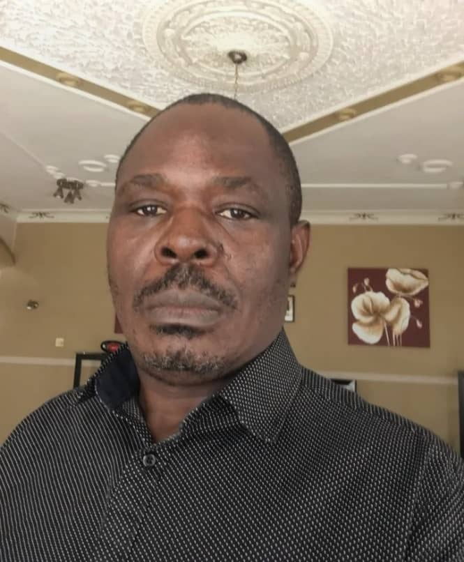
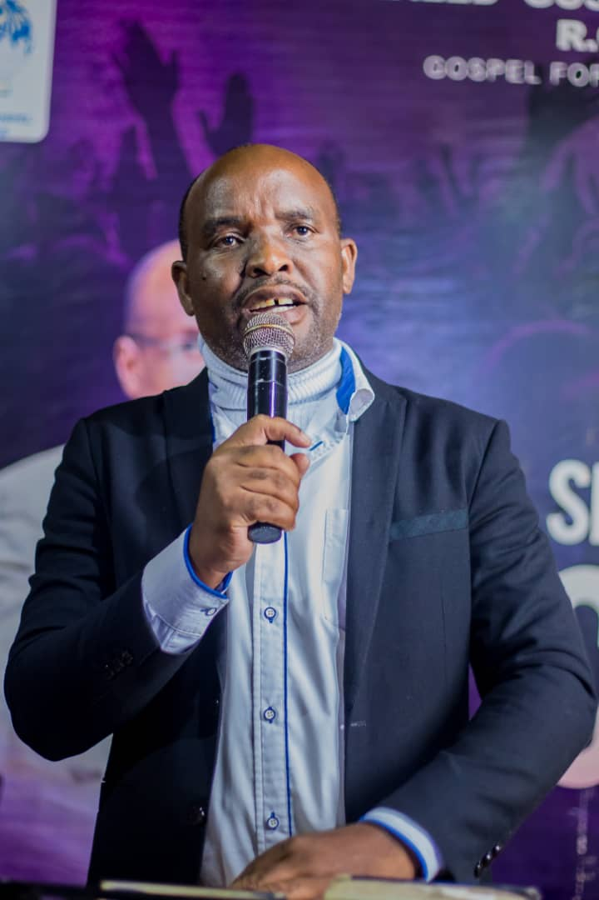

Revealed Gospel Ministries is an evangelistic movement dedicated to preaching the Gospel of salvation, winning souls, and making disciples across Malawi and beyond.
How a divine burden grew into a nationwide evangelistic movement.
Macmin Kawonga receives Jesus Christ as his Lord and Saviour during a powerful Gospel crusade led by the renowned Evangelist Reinhard Bonnke in Blantyre, Malawi. This laid the spiritual foundation for his future ministry.
While serving at Beit CURE Hospital as an Orthopaedic Clinical Officer, God births in Macmin a deep passion for evangelism. This burden leads him to establish "Wheels of Evangelism", an workplace fellowship sharing the Gospel with colleagues and patients, and reaching local communities.
Having retired from his medical career to pursue full-time ministry, Apostle Kawonga receives a divine revelation and the name "Revealed Gospel Ministries" through the voice of an angel, confirming God's commission to establish an evangelistic ministry.
Revealed Gospel Ministries is officially launched in Mzuzu, Malawi, setting out with an unwavering commitment to fulfill the Great Commission through open-air crusades and discipleship programs.
Revealed Gospel Ministries is officially registered in Malawi under the Trustees Incorporation Act, establishing the Board of Trustees to provide strategic leadership, sound governance, and legal compliance.
The Board of Trustees is the legal and governing body of Revealed Gospel Ministries. Incorporated in Malawi on 23rd August 2022, the board provides strategic leadership, administrative oversight, and financial accountability to ensure the ministry's operations uphold the highest standards of integrity, transparency, and legal compliance.
Apostle Macmin Kawonga is the Founder and General Overseer of Revealed Gospel Ministries and a retired Orthopaedic Clinical Officer. He received Christ in 1986 during a Reinhard Bonnke crusade, which sparked his lifelong passion for evangelism. Over decades of clinical and spiritual service, he has led outreaches across Malawi and continues to provide visionary leadership to the ministry.
As Director, he provides overall spiritual and visionary leadership, oversees evangelistic crusades, directs discipleship initiatives, and leads leadership development projects.

Mr. Fumbani Sichinga is a retired civil servant who served with distinction as a Director of Administration in the Government of Malawi. Based in Lilongwe, Mr. Sichinga is a committed Christian with a deep passion for evangelism and discipleship. He brings extensive administrative, governance, and management expertise to the board.
As Chairperson, he presides over board meetings, leads strategic planning and governance oversight, coordinates trustee activities, and provides wise administrative counsel.
Pastor Alick Nyirenda is an ordained minister of the Gospel with a deep passion for open-air evangelism and soul-winning. He is actively involved in mobilizing local churches and organizing logistical structures for crusades to ensure that the gospel reaches the most remote areas effectively.
As General Secretary, he coordinates ministry correspondence, maintains board records, oversees planning and logistics for crusades, and manages organizational schedules.

Evangelist Elijah Katete is a Surgical Lecturer at Ekwendeni College of Health Sciences. A devoted servant of God with a heart for open-air crusades and missions, he combines his professional academic experience with a dedication to expanding the Kingdom of God.
As General Treasurer, he provides financial oversight, manages the ministry's budgets and donations, maintains financial transparency, and ensures proper auditing controls.
Counsel Fredson Banda is a prominent legal practitioner based in Lilongwe. Dedicated to the vision of RGM, he brings his extensive legal background to the ministry to ensure that all operations are conducted in strict compliance with the laws of Malawi.
As Legal Advisor, he provides counsel on regulatory matters, drafts contracts, ensures compliance with Malawian charity laws, and safeguards the ministry's legal standing.
We believe that the work of the Kingdom is a collaborative effort. RGM works hand-in-hand with established ministries and local churches.
Life Ministries Malawi is RGM's primary partner in discipleship and follow-up activities. They provide critical discipleship materials, booklets, and training for local church leaders who follow up with new believers after every crusade, ensuring long-term spiritual growth.
Visit lmmalawi.org →Every open-air crusade is organized in direct collaboration with local churches and pastoring fraternals in the crusade area. This ensures that the spiritual harvest is welcomed into healthy local fellowships, providing them with immediate spiritual communities, baptism, and ongoing care.